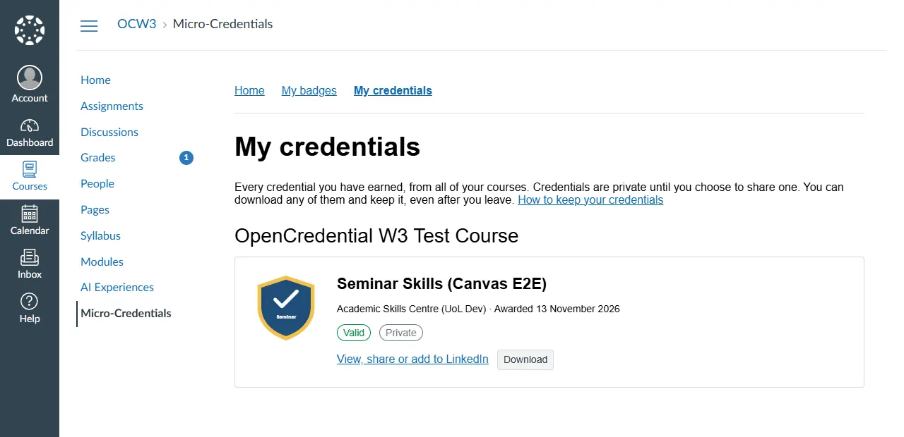

Lecturers
Recognise skills without extra admin.
- Build a badge in a guided wizard, no technical knowledge needed
- Preview exactly what students will see
- Confirm awards, or let them issue automatically
- See learner progress and export award history
Open-source micro-credentials for Canvas LMS
OpenCredential turns what students achieve in Canvas into digitally signed Open Badges 3.0 credentials. Students own them, share them when they choose, and anyone can check one in seconds.
Open Badge 3.0 credential
Seminar Skills
Verified
Staff and students open it from the course menu over LTI 1.3. No second login, no separate site to learn.
Award rules are checked against Canvas itself: module completion, submissions and released marks.
Each award is a signed Open Badges 3.0 verifiable credential, not just a picture of a badge.
Self-hosted and open source, with no paid or mandatory cloud service behind it.
How it works
Four steps, shown here with screenshots from a real run on a development Canvas.
A seven-step wizard covers the badge's description, outcomes, artwork and requirements. Requirements point at real things in the course:
Combine them as "all of" or "any of". A requirement only counts when Canvas confirms it.

By default, a second person checks a badge against a short quality checklist before students can see it: honest wording, requirements that evidence the outcomes, accessible artwork, nothing that implies academic credit. Institutions decide where that review is required.
Published versions are locked. Changing a badge means starting a new version, so a credential always matches the criteria it was awarded under.

OpenCredential checks Canvas and records who has met the requirements. Each badge chooses how it is awarded:
The institution sets the default. Students see their progress and, once awarded, the credential in "My credentials" across all their courses.

Credentials stay private until the student turns on a public link. From there they can add it to LinkedIn, or download the signed file and keep it after they leave.
The public page checks the signature, the issuer's key and whether the credential has been revoked, then says so in plain English. The student decides whether their name appears.

Who it's for
Recognise skills without extra admin.
Evidence you own and control.
Governance built in, not bolted on.
Trust and privacy
A badge image can be copied by anyone. A signed credential cannot be altered without the signature failing, and it can be withdrawn if it was issued in error.
eddsa-rdfc-2022). Only a separate signing service ever touches the private keys.{
"type": ["VerifiableCredential", "OpenBadgeCredential"],
"issuer": { "name": "Academic Skills Centre" },
"validFrom": "2026-11-13T00:00:00Z",
"credentialSubject": {
"type": "AchievementSubject",
"identifier": [{
"hashed": true, "identityType": "emailAddress"
}],
"achievement": {
"name": "Seminar Skills",
"criteria": { "narrative": "Complete the module." }
}
},
"credentialStatus": { "type": "BitstringStatusListEntry" },
"proof": {
"type": "DataIntegrityProof",
"cryptosuite": "eddsa-rdfc-2022",
"proofValue": "z5Kq…"
}
}Where the project is
The first version is complete and has run against a real Canvas on a development machine. It is being built with the University of Liverpool as its first intended home, and is not a live University service.
Credentials pass the 1EdTech inspector and an independent verifier in automated tests. OpenCredential has not been through 1EdTech certification, and does not claim to be certified.
The whole stack runs from one command with demonstration data: nine example badges and twelve synthetic students.
git clone https://github.com/bwoybcn/CanvasBadging.git && cd CanvasBadging && docker compose up --build